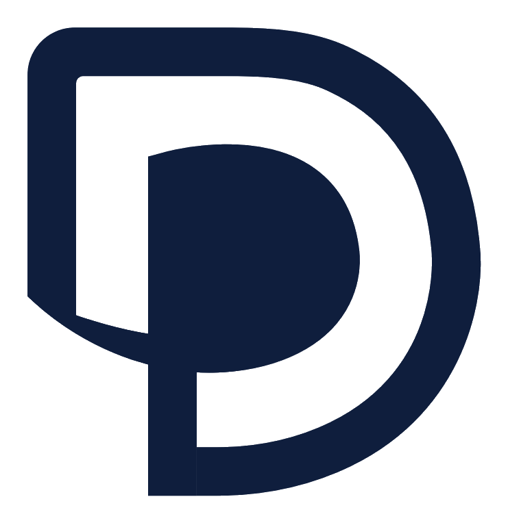

DTD-Cargo · Identidad oficial v1.0
Logo oficial · isólogo + wordmark
El isólogo se mantiene tal cual el PNG original. El wordmark se reconstruye en Archivo Black: DTD en wine, espacio mínimo, Cargo en navy.
Logo principal
El logo completo — isólogo + wordmark. Lo que mandás a imprenta cuando piden "el logo".
- Variante activa Logo · Principal
- Archivo
DTDCargo-Logo-Principal.png - Fondo válido Light / paper / white
- Contraste 14.8 : 1 · AAA
- Paleta #0F1E3D · #7F0F1A
Ajustar lockup oficial
180 px
40 px
56 px
0.15 em
-0.020 em

DTDCargo
Ajustes en vivo · diff vs default
Aún no cambiaste nada. Abrí "Ajustar lockup" y vas a ver acá lo que modifiques.
01 / Variantes oficiales
4 versiones · una para cada fondo
Toda identidad seria tiene múltiples lockups por contraste. Estos son los únicos 4 permitidos.
Primary · light DEFAULT
DTDCargo
Reverse · dark
#0F1E3D
DTDCargo
Reverse · wine
#7F0F1A
DTDCargo
Mono · sello tinta
#0F1E3D
DTDCargo
02 / Regla de oro · contraste
¿Cuál variante uso?
Si dudás, mirá el ratio WCAG. Mínimo 3:1 para identidad gráfica.
03 / Escala
De favicon a header
El lockup respeta legibilidad de 48 a 320 px de ancho.
DTDCargo
48 pxMínimo
DTDCargo
80 pxSidebar
DTDCargo
120 pxCard
DTDCargo
200 pxHero
DTDCargo
320 pxBanner
04 / Especificación técnica
Para reproducirlo en cualquier herramienta
Si lo hacés en Figma, Illustrator, Canva o Word — estos son los parámetros oficiales.
Construcción
| Isólogo | PNG assets/dtdcargo-isologo.png · 741×764 px · fondo transparente |
| Wordmark fuente | Archivo Black · 900 weight |
| Wordmark size | ≈ 30% del ancho del isólogo |
| Letter-spacing | -0.02em (ligero negative tracking) |
| Gap DTD ↔ Cargo | 0.15em (espacio mínimo) |
| Gap iso ↔ wordmark | ≈ 18-22% del alto del isólogo |
| Color "DTD" | #7F0F1A wine corporativo |
| Color "Cargo" | #0F1E3D navy corporativo |
Reglas
| ✅ Sí | Usar sobre fondos light, paper, dark y wine del sistema |
| ✅ Sí | Escalar proporcionalmente — nunca deformar |
| ✅ Sí | Versión horizontal permitida cuando el alto sea limitante |
| ❌ No | Inventar colores fuera de la paleta · usar verde / fucsia / neón |
| ❌ No | Aplicar gradientes, sombras difusas o efectos de "glow" |
| ❌ No | Usar el isólogo solo sin el wordmark (excepto avatares < 64px) |
| ❌ No | Reemplazar la fuente Archivo Black por Inter / Roboto / system |
| ❌ No | Concatenar como "DTDCARGO" — siempre dos palabras |
05 / Lockup horizontal
Variante header
Cuando el alto es la dimensión crítica (header de email, sidebar del ERP, factura).
Horizontal · header
DTDCargo